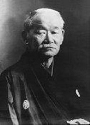
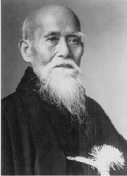
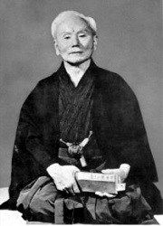

Czym jest Ju-Jitsu?
To japońska sztuka walki. (Spotyka się także pisownię ju-jitsu, ju-jutsu, jiu-jitsu i sporo innych). Sztuka miękkiego ustępowania, która powstała i rozwinęła się w Japonii, jako system bojowy samurajów (bushi). Ju-Jitsu to również metoda walki wręcz, bez broni lub z użyciem małego oręża, stosowana w ataku i obronie, w starciu z jednym albo kilkoma uzbrojonymi lub nieuzbrojonymi przeciwnikami. Wbrew powszechnemu przekonaniu jujutsu wcale nie jest tylko defensywne. W prawdziwych sztukach walki zarówno obrona i atak były wykorzystywane w jednakowy sposób dla zdobycia przewagi. „Adept starej szkoły nie zawahałby się zadać pierwszego ciosu, nie czekając na atak domniemanego przeciwnika. Takiego zachowania uczono na przykład gwardzistów z oddziałów ochrony dworskich dygnitarzy”.
JU-JITSU używane było nie tylko w obronie własnej, lecz również dla ochrony osób trzecich. „Tu z założenia dopuszczano formę ataku i użycia siły wobec potencjalnego przeciwnika zanim doszło do sytuacji zagrożenia. Należało to zrobić sprawnie, szybko i w miarę bez szkody dla aresztanta”.
„Ju” oznacza „łagodny, ustępliwy, uległy”, oznacza wykorzystanie siły przeciwnika do pokonania go, do obrócenia się przeciwko napastnikowi. Ju-Jitsu tłumaczy się również jako „łagodna sztuka”.
Stosowane techniki
- Pady (pozwalające na bezpieczny upadek w różnych warunkach) – ukemi waza,
- Uderzenia i kopnięcia (zwane ogólnie technikami uderzeń) – atemi waza,
- Techniki bloków – uke waza,
- Dźwignie na wszelkie stawy, a także na kręgosłup – kansetsu waza,
- Techniki duszeń na szyję, tętnice, tułów (wykonywane rękoma, nogami, kimonem) – shime waza,
- Uciski i uderzenia na punkty wrażliwe,
- Unieruchomienia po wykonaniu technik (trzymania i tzw. wykończenia) – osae waza,
- Rzuty – nage waza,
- Techniki z bronią : kijem (jo), pałką (hambo), drewnianym mieczem (bokken),
- Techniki obrony przed różnorodnymi atakami – gołymi rękami i przy pomocy broni.
Historia powstania
Wzmianki kronikarskie (Nihon Shoki) siegają 230 roku przed Chrystusem, kiedy to odbył się turniej Chiraka Kurabe („próba sił”). Zapoczątkowane został wtedy walki sumo i yawara. Najprawdopodobniej właśnie yawara („miękki”) jest pierwotna nazwa ju-jitsu . Styl ten zawierał skuteczne techniki obezwładniania przeciwnika, będące podstawa sztuki wojennej. Określenie ju-jitsu pojawia się w XVI wieku. Oczywiście nie oznacza to, że od roku 230 p.n.e. do XVI wieku nie rozwijało się ju-jitsu, w tym okresie sztuka ta uprawiana była w tajemnicy wśród szlachty i samurajów. Pierwotne formy późniejszego ju-jitsu stosowali samuraje podczas licznych wojen (XII – XVI wiek) – z Mongołami, Koreą, ale również pomiędzy rodami. Kiedy samuraj tracił w walce miecz, używając tych technik mógł pokonać przeciwnika. W walce używano również luku oraz piki. Ju-jitsu było wiec rozwijane jako uzupełnienie technik wojennych z użyciem broni. Nie ma pewności co do roku, w którym po raz pierwszy została użyta nazwa ju-jitsu. Niektóre źródła podają ze miało to miejsce w 1532 roku za sprawa Hisamorii Tenenuchi, choć inne mówią o roku 1680 i osobie lekarza o nazwisku Akyama Shirobei Yoshitoki.
")
W tym okresie najpopularniejszymi szkołami były: Kyushin-Ryu, Kito-Ryu, Takenouchi-Ryu, Ryoshito-Ryu, Jakishin-Ryu, Yoshin-Ryu. W 1559 roku do Japonii przybył z Chin mnich Chin Gen Pinh, ekspert kempo, które zostało częściowo włączone do ówczesnych treningów ju-jitsu. Ju-jitsu rozwinęło się za czasów panowania Tokugawy w XV i XVI wieku. Stalo się w tym okresie najbardziej popularna a zarazem najbardziej strzeżona sztuka walki w Japonii – za zdradzenie jej tajników karano śmiercią. Nadal nie ma pewności co do rodowodu Ju-Jitsu . Cześć osób uważa ze system ten sprowadzony został z Chin, inni, że jest to system rdzennie japoński . Najbardziej prawdopodobne wydaje się trzecie wytłumaczenie, ze w systemie tym zawarte zostały techniki sprowadzone z Chin z technikami rdzennie japońskimi. Niektóre ze starych szkól przetrwały do czasów współczesnych. Poszczególne szkoły ju-jitsu bardzo się od siebie różniły, można by się było nawet pokusić o stwierdzenie, że każda szkoła to oddzielny system walki.
Ju-Jitsu - "ojcem" innych sztuk walki
Ju-jitsu uważane jest za pierwowzór wielu stylów samoobrony, a poszczególne techniki bezpośrednio lub z pewnymi modyfikacjami zostały przejęte przez inne systemy: judo, aikido oraz karate (kempo). Czerpią one bardzo wiwle z ju-jitsu – z jego wachlarza możemy wyróżnić wiele technik, które zapożyczyli „autorzy” innych sztuk walki. Ju-jitsu możemy podzielić na trzy drogi (do): judo, czyli rzuty i dźwignie, aikido – wykorzystywanie ki przeciwnika, oraz karate – uderzenia i kopnięcia.
| JUDO | AIKIDO | KARATE |
|---|---|---|
|  |  |  |
| Jigoro Kano 1860–1938 | Morihei Ueshiba 1883–1969 | Gichin Funakoshi 1868–1957 |
Z przeminięciem rodu Tokugawa (1800), Japonia zjednoczyła się, nastąpiły zmiany w strukturze społecznej. Jedna z nich było zniesienie stanu Samuraja – stawał się zwykłym mieszczaninem. Nie mógł nosić już miecza. Zmuszony był wiec do obrony przy użyciu technik walki wręcz. Wraz z zniesieniem stanu samurajskiego zaczyna się powolny upadek ju-jitsu.
W latach 20-stych Morehei Ueshiba stworzyl sztuke Aiki-Jitsu (na podstawie ju-jitsu). W latach 40-stych zaczał naucząc jej jako AIKIDO. W latach 80-tych Jigoro Kano spopularyzował wśród Japończyków walkę sportowa poprzez zainicjowanie stylu JUDO. Usunął z ju-jitsu wszystkie jego zdaniem niebezpieczne chwyty i ciosy. Wprowadził przepisy szlachetnego, sportowego współzawodnictwa. Jemu również zawdzięczamy system pasów. Obecnie techniki ju-jitsu wykorzystywane są prawie w każdym systemie walki. W czasach współczesnych mało pozostało szkól tradycyjnych, przede wszystkim istnieją szkoły „modern Ju-jitsu”. Modern Ju-jitsu (nowoczesne ju-jitsu) to w wiekszości systemy przystosowane do teraźniejszych czasów, opierające się często na technikach tradycyjnych oraz wykorzystujące elementy współczesne i techniki z innych systemów walki. Nowoczesne ju-jitsu bardzo często przystosowane jest dla potrzeb policji, wojska, realnej samoobrony, ponieważ z tradycyjnych walk wschodu własnie ju-jitsu najbardziej uniezależnia wynik walki od wielkości, masy i siły walczących. Nie znaczy to oczywiście, ze wspomniane cechy są bez znaczenia.